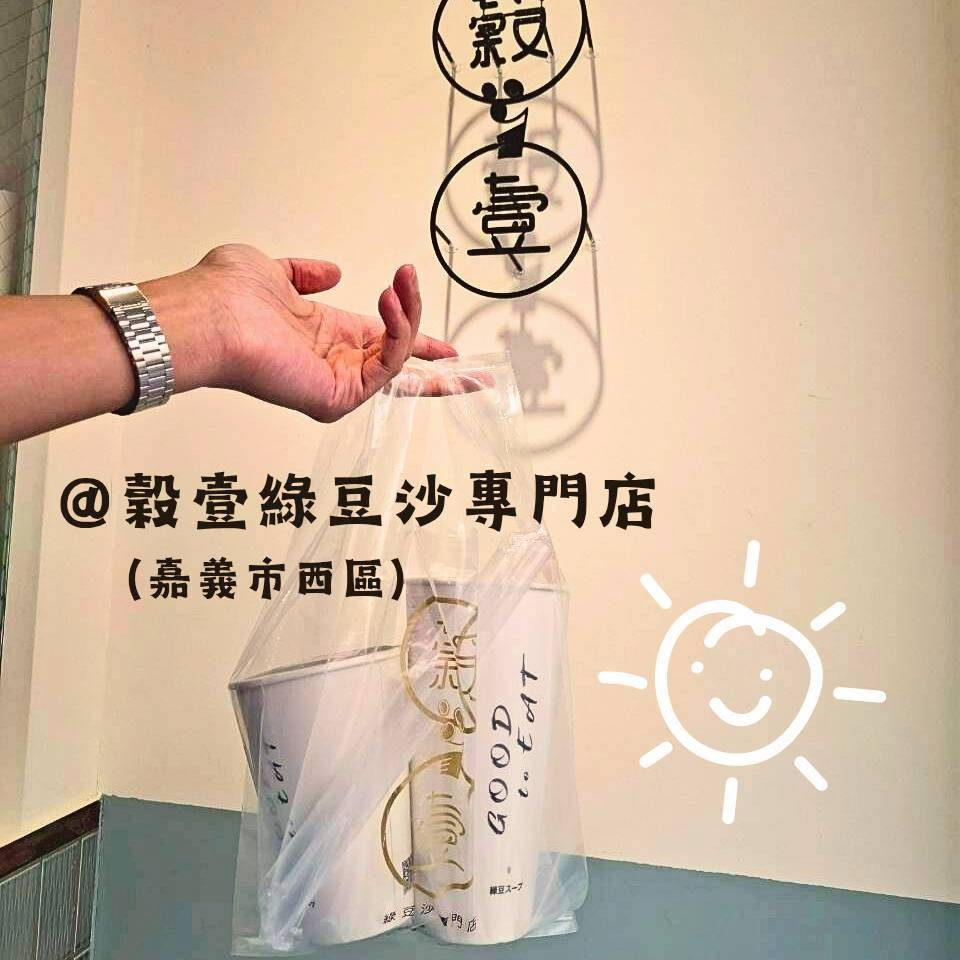
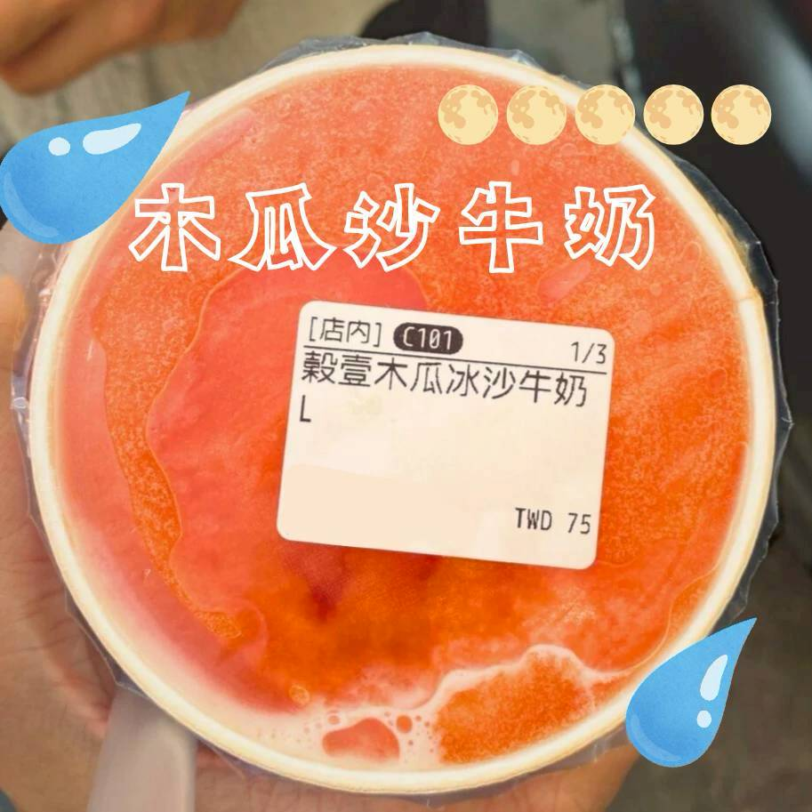
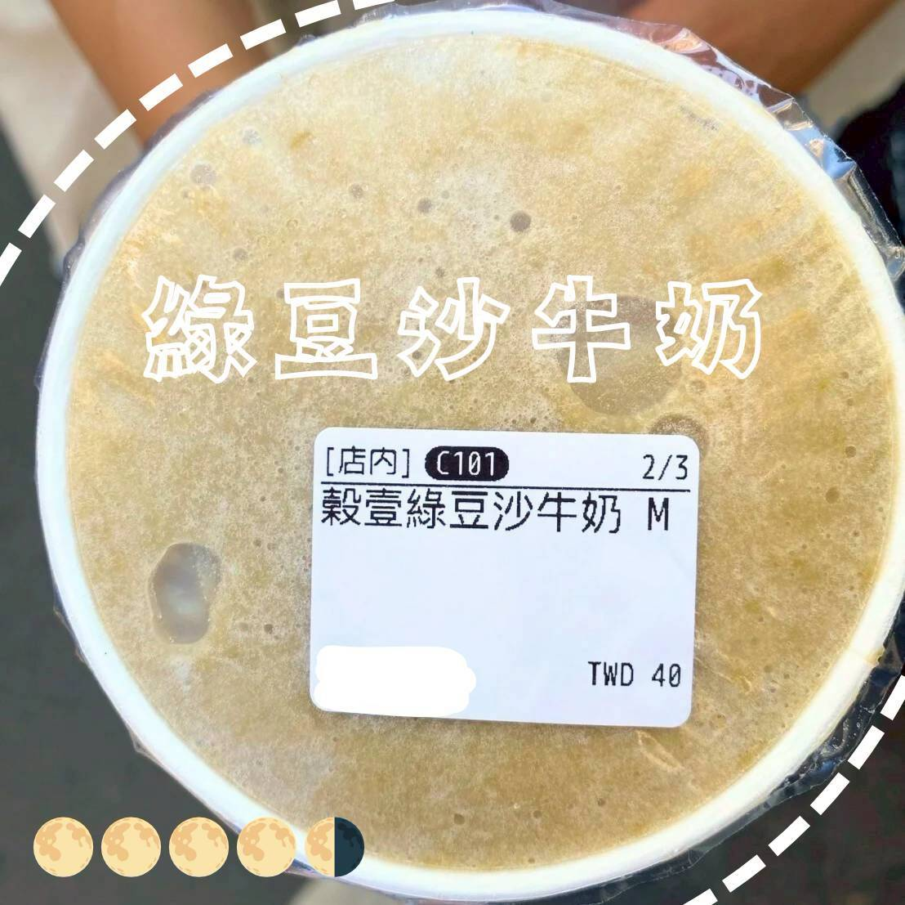

穀壹綠豆沙專門店
1️⃣ 基本資料
- 餐廳名稱：穀壹綠豆沙專門店
- 地點：嘉義市西區北榮街76號（鄰近嘉義文化路圓環，市中心鬧區）
- 價位區間：NT$45–NT$100
- 營業時段：11:00–18:00
- 是否需訂位：無需訂位，熱門時段可能需排隊。
2️⃣ 餐廳飲食類型與整體環境
餐廳飲食類型：主打綠豆沙、紅豆沙、木瓜沙，冰沙飲品的飲料店。
目標客群：喜愛綠豆沙等冰沙類飲品的人、覺得天氣炎熱受不了的人。
總體環境氣氛：小而精緻的店面，為外帶店形式。

3️⃣ 餐點評價
✨️ 木瓜沙牛奶
非常推薦！！清涼解渴，甜而不膩。鮮豔的橘色木瓜沙看起來就非常有食慾，與牛奶組成木瓜沙牛奶，絕配！！冰沙也很好地幫助保冷，不讓牛奶受木瓜酵素影響，導致苦味。一喝就上癮，想再來一杯啊！！

✨️ 綠豆沙牛奶
綠豆沙牛奶綿密濃醇，在水準之上。但因較常見，所以不如木瓜沙牛奶一般驚豔。

4️⃣ 觀點與總結
：綠豆沙牛奶很溫順，木瓜沙牛奶很驚豔，兩者都有讓喝的人感到幸福的魔法✨️
🐸 ：木瓜沙牛奶，太厲害了！太厲害了！本來要連喝兩天的！
🌟評分
口味評分 0–5 分：4.5 / 5（木瓜沙牛奶）
回訪意願度 0–5 分：5 / 5（木瓜沙牛奶第一！）
#穀壹綠豆沙專門店 #木瓜沙牛奶 #綠豆沙牛奶 #嘉義西區 #嘉義市 #嘉義美食 #嘉義西區美食 #點心 #飲料 #嘉義美食 #一球情侶嘉義吃喝